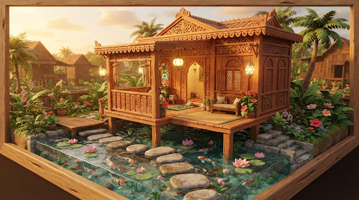
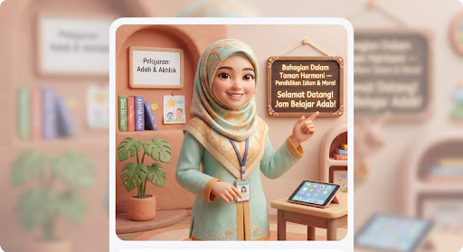

local_florist
TAMAN HARMONI • SERAMBI BUDI
mosque
Pendidikan Islam & Moral Thn 1
music_note
Alunan Ketenangan & Gemercik Kolam Ikan

🪷
Kolam Ikan Bersih
🏮
Tanglung Budi
Anjung Adab & Kasih
Ruang Teduh Berbudi Pekerti

school
GURU PEMBIMBING BUDI
Ustazah Melur
“Ahlan wa sahlan ke Taman Harmoni, Wira Cilik! Di sini kita semaikan akhlak murni dan adab terpuji bersama keluarga tersayang. Mari kita fahami amalan santun sebelum makan bersama!”
favorite
ADAB & AKHLAK TAHUN 1 • KELUARGA
star
+50 XP
Uji Minda Budi: Amalan Baik Sebelum Makan
Semasa berkumpul bersama ibu bapa di anjung makan, apakah amalan adab terpuji yang pertama patut kita lakukan sebelum menyentuh makanan?
🧼
1. Basuh Tangan
🧎
2. Duduk Sopan
🤲
3. Baca Doa
🍚
4. Tangan Kanan
lightbulb
Hikmah Budi & Kesyukuran:
Membaca doa dan membasuh tangan adalah tanda kesyukuran atas nikmat rezeki serta menjaga kebersihan diri seperti yang diajar dalam ajaran agama dan adab murni keluarga kita.
cottage
3 Sudut Amalan Berhemah
KSSR Moral & Islam
🤝
Pohon Salam & Hormat
Adab bercakap sopan dengan ibu bapa
🪷
Kolam Ikhlas & Kasih Haiwan
Beri makan ikan koi & merbok
3/3 Selesai 🐟
📖
Warkah Kisah Teladan Luqman
Kisah nasihat kesopanan & rendah diri